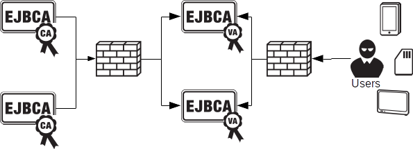

External OCSP Responders
External OCSP responders serves multiple purposes:
Separating the validation service from the CA service. This increases security because the CA service does not have to accept any incoming connections.
Ensure highest availability of the validation service. Using external OCSP responders you can have several completely independent nodes. This means that you can do maintenance on the CA, or some of the OCSP nodes without disturbing availability to the validation service.
Ensure highest performance. The external OCSP responder is very fast and one single responder can answer hundreds of requests per second. In addition to this the external OCSP responders can be scaled linearly by adding multiple independent OCSP nodes.
The following diagram is a rough schema of the architecture using external OCSP responders.

The EJBCA external OCSP responder does not rely on CRLs being issued by the CA. Instead the OCSP responder uses it's own database with certificate status information. This can be a replica of the CertificateData table in EJBCA. In normal operation the EJBCA CA pushes status changes to the external OCSP database when certificates are issued and revoked in EJBCA.
The external OCSP responder is not limited to usage in combination with EJBCA though. The external OCSP database can simply be updated by other tools, for example being fed with CRLs from other CAs.
Features
Independent of CA software used (various degrees of integration is possible and may be required).
One responder can respond for any number of CAs.
Status information stored in SQL database.
Not depending on CRLs. Status information can be updated in real-time.
Plug-in mechanism for custom OCSP extensions.
Highly configurable audit and transaction logging. Suitable for invoicing.
Supports PKCS#11 HSMs and soft keys.
Built in health check used by load balancers and for monitoring.
Configurable for requiring signed requests, authorized signers, etc.
Can answer good or unknown to non-existing certificates, with different configuration based on request URI.
Linear scalability for performance and high availability by adding multiple nodes.
High performance, >500 request per second on a single server.
On-line renewal of OCSP responder keys and certificates.
OCSP client in Java (Client ToolBox).
Support for Norwegian Unid FNR extension.
Support for German CertificateHash extension.